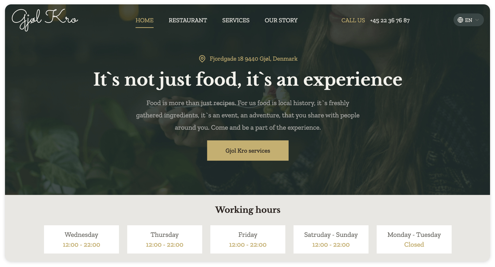

Our team was presented with a vision of a website for “Gjøl Kro” from it’s owner Peter in his Client brief. They had no website till then, so the task was to create responsive and accessible website which can be accessed from all types of screens and screen sizes, projects all of Peters visions and visually/functionally reflects restaurants image.
Screenshot from finished website https://mmd.ucn.dk/class/MDE-CSD-S21/10407761/gjolkro/index.html